Parking in Italy requires understanding a colorful system of curb markings and traffic signs that regulate where, when, and how you can leave your vehicle. Blue lines for paid parking, white lines for free zones, yellow lines for disabled drivers, and pink lines for expectant mothers create a complex landscape that catches many drivers off guard. Add time-based restrictions, no-stopping zones, and road-cleaning rules, and you've got a recipe for expensive fines.
This comprehensive guide breaks down every parking sign and curb marking you'll encounter across Italian cities. Whether you're navigating Rome, Milan, Florence, or smaller towns, you'll learn what each sign means, which zones allow parking, and how to avoid costly penalties that can quickly add up.
Key Takeaways
- Blue lines indicate paid parking zones where tickets or parking discs are required
- White lines indicate free parking, though time restrictions may apply
- Yellow lines are reserved exclusively for blue badge disability permit holders
- Pink lines are reserved for expectant mothers and parents with infants
- Parking fines in Italy range from fines; always check posted signs for time limits and restrictions
Understanding Curb Markings: The Italian Color System
Italy uses a distinctive color-coded curb marking system that indicates the parking rules for each zone. Each color communicates different regulations about payment, time limits, and eligibility. Recognizing these colors at a glance is essential for avoiding parking violations and fines across all Italian cities.
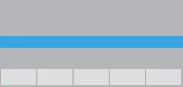
Blue Line (Parking a Pagamento)
Paid parking zone. You must display a valid parking ticket or parking disc. Blue badge holders may be exempt depending on local regulations. Check for time windows and payment details on nearby signs.
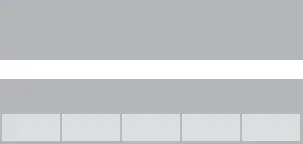
White Line (Parking Gratuito)
Free parking zone. You do not need to pay, but check signs for time-limited parking restrictions. Some white zones may restrict parking during specific hours or days of the week.
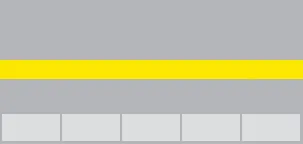
Yellow Line (Parcheggio Disabili)
Blue badge disability parking only. Reserved exclusively for vehicles with valid disability permits. No other vehicles can park in yellow line zones.
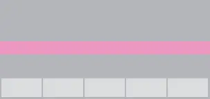
Pink Line (Parcheggio Mamme)
Reserved parking for expectant mothers and parents with infants. Valid permit required. Available only in some cities and regions.
No Parking & Stopping Zones
Italy's most restrictive parking regulations appear as prohibition signs that clearly indicate where parking and stopping are forbidden. These signs take priority over curb markings and must be strictly obeyed to avoid significant fines and possible towing.
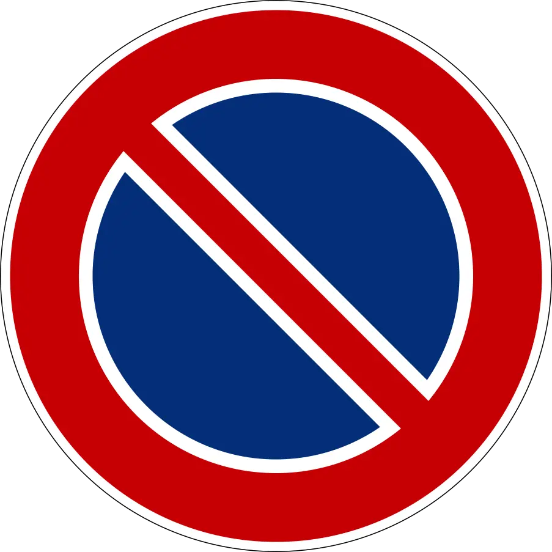
No Parking (Divieto di Sosta)
Parking is strictly prohibited in this area. Vehicles left in no-parking zones will be fined and likely towed. Obey this sign at all times.
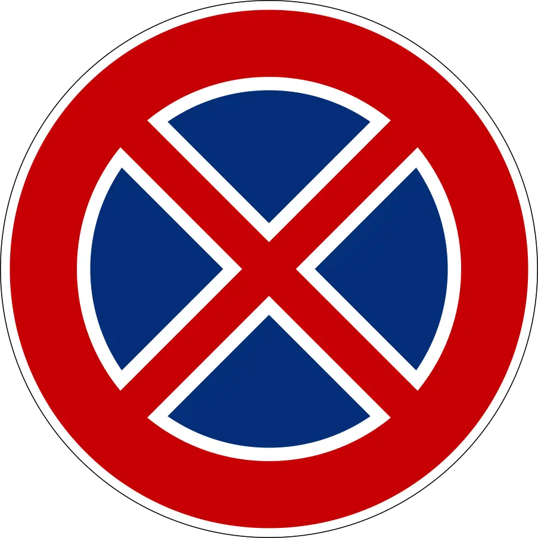
No Stopping (Divieto di Fermata)
Stopping is prohibited even temporarily. You cannot stop your vehicle, park, or wait in this area. This is a stricter restriction than no-parking zones.
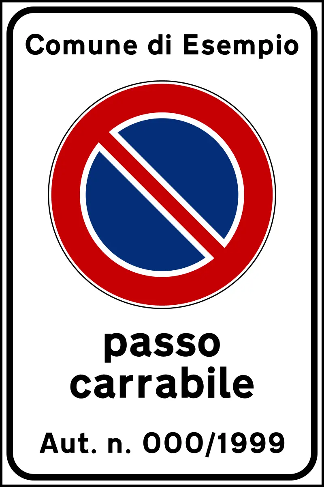
No Parking at All Times
Absolute prohibition on parking 24 hours a day. No exceptions unless specified for blue badge holders or delivery vehicles. Always subject to heavy fines.
Parking Permission & Direction Signs
Beyond restriction signs, Italy uses positive authorization signs that indicate where parking is allowed and provide additional details about zones, distances, and special conditions.
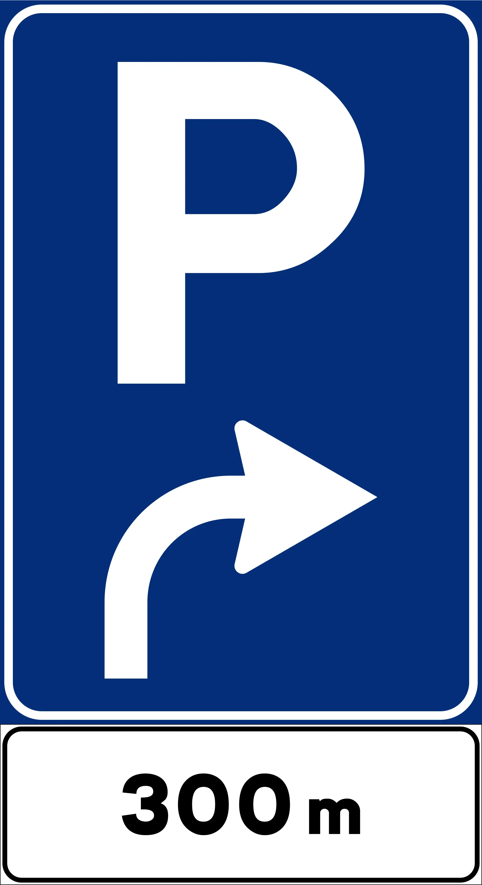
Parking Ahead (Parcheggio)
Indicates a parking zone ahead in the direction shown. A distance marker (e.g., 300m) shows how far away the zone is. Follow the arrow to reach the parking area.
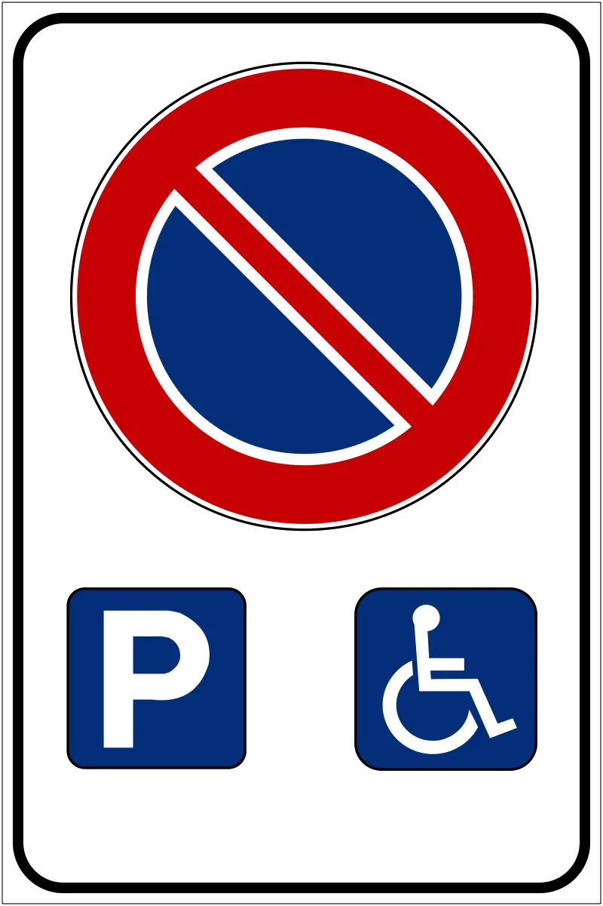
No Stopping Except Blue Badge Holders
General stopping prohibition, but blue badge disability permit holders may stop. Drivers without valid disability permits must not stop in this area.
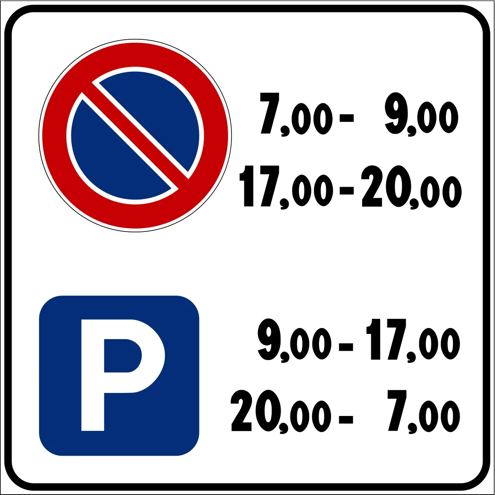
Parking Allowed at Times Indicated
Parking is permitted only during the times shown on the sign. Outside these hours, parking is prohibited. Check sign details for exact hours and any day-of-week restrictions.
Time-Based & Road Maintenance Restrictions
Italian parking regulations often change based on time of day, day of week, and road maintenance schedules. Understanding these temporal restrictions is critical to avoiding violations.
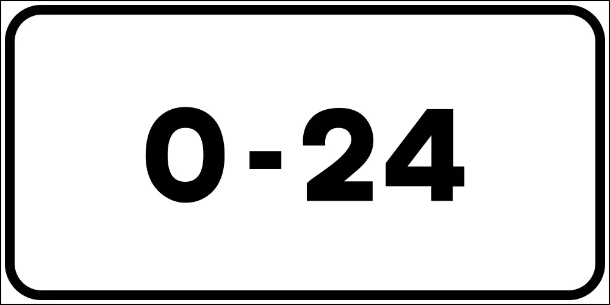
Applies All Day (0-24)
The restriction applies 24 hours a day, all day long. No time-based exceptions. The sign shows a continuous restriction regardless of time of day or day of week.
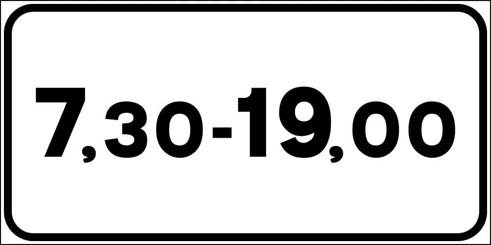
Specific Time Windows (e.g., 7:30-19:00)
The parking restriction applies only during the hours shown. Outside these times, different rules may apply. Always check for multiple signs showing different restrictions.
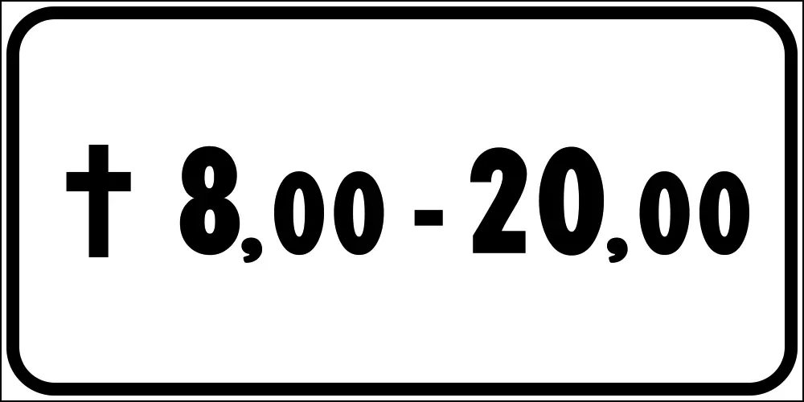
Holidays Only (Festivi)
The restriction applies only on Italian holidays. On regular workdays, different parking rules apply. Check the calendar to determine which days are considered holidays in Italy.
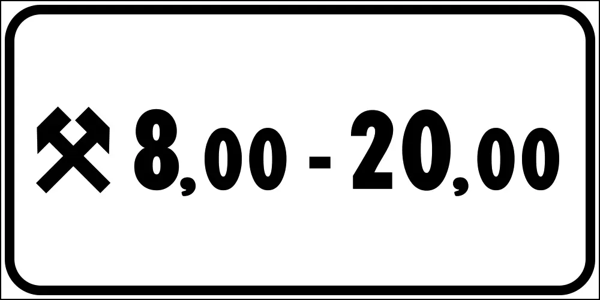
Work Days Only
The restriction applies only on regular workdays (Monday-Friday, excluding holidays). On weekends and holidays, parking rules are different. Check for secondary signs showing weekend rules.
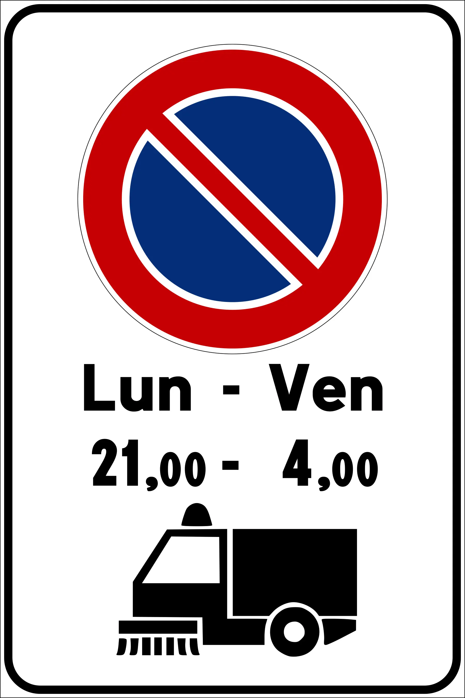
No Parking During Road Cleaning
Parking is prohibited on scheduled street cleaning days, typically indicated by sign symbols showing a street sweeper or cleaning truck. Check local schedules for cleaning times.
Vehicle Category Restrictions
Some parking zones apply restrictions based on vehicle type. Trucks, buses, motorcycles, and commercial vehicles may face different rules than standard passenger cars.
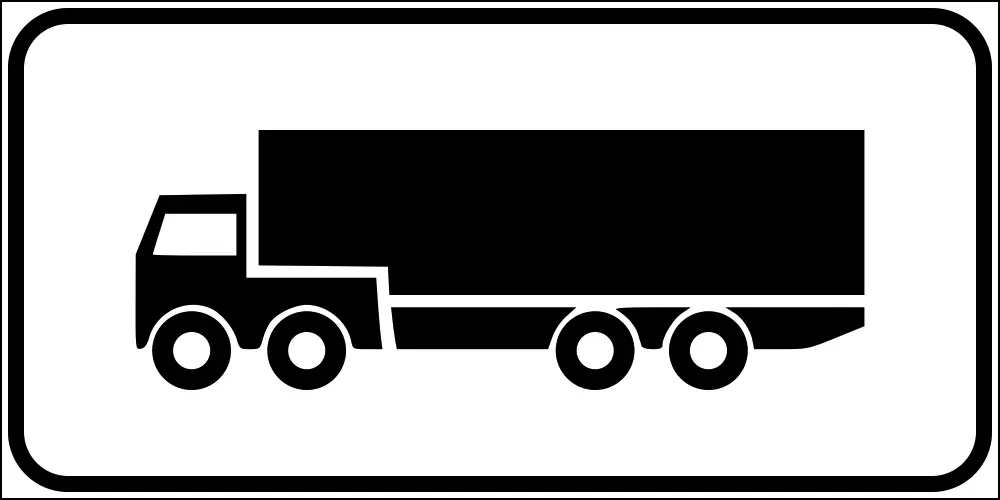
Applies to Trucks Only
The restriction applies only to trucks and commercial vehicles. Standard cars are not affected by this sign. Different rules apply to non-truck vehicles.
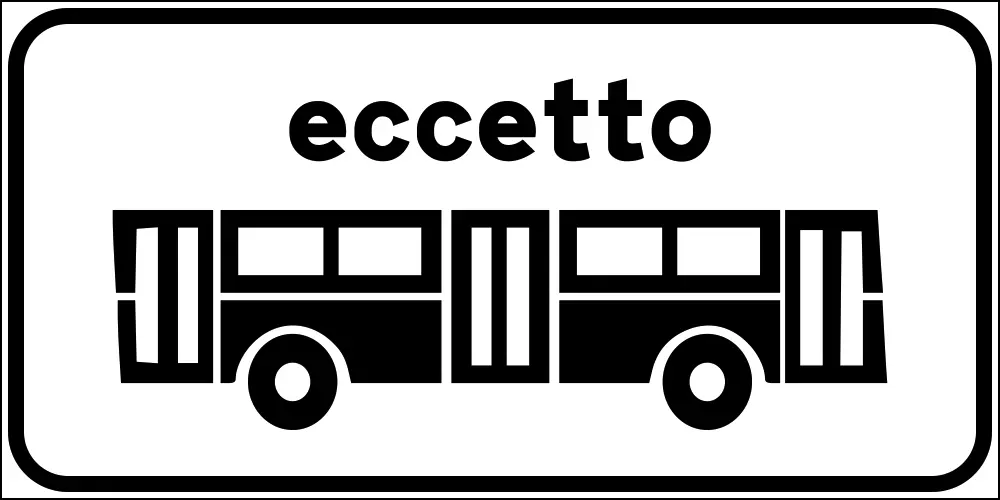
Exception: Buses (Eccetto Autobus)
The parking or restriction sign does not apply to buses. Buses are exempt from the rule shown. The symbol shows a bus with a line through it or marked as "eccetto."
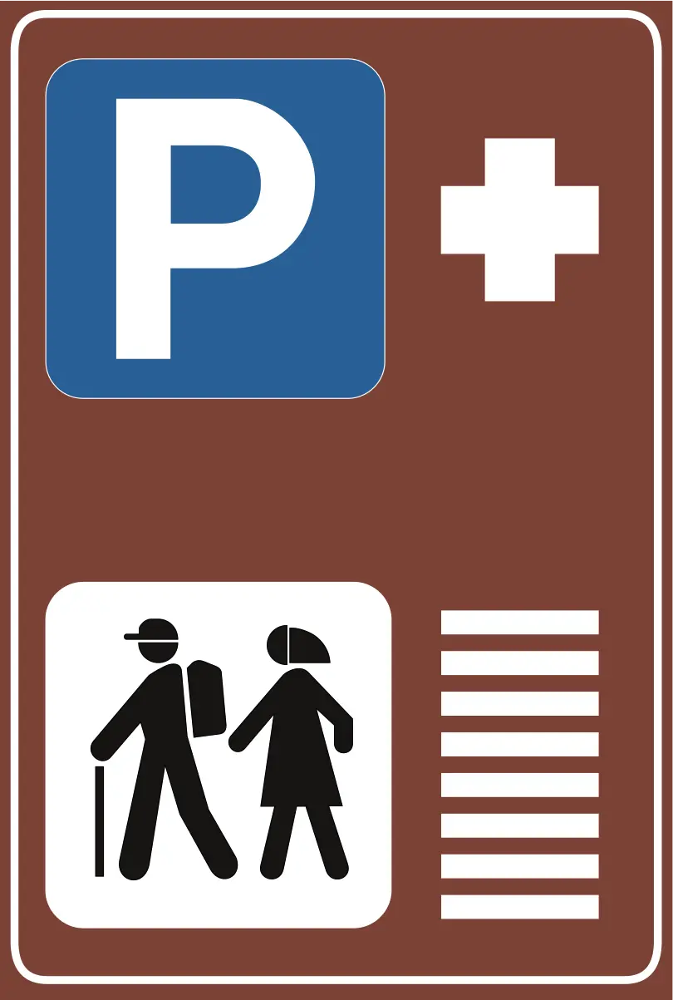
Park and Ride (P + Hiking Symbol)
Combined parking and hiking area. Parking is allowed as the start point for trail access. Follow signs for designated parking spaces and hiking trail entrances.
The Bottom Line: Know the Rules, Avoid the Fines
Parking in Italy doesn't have to be stressful. The rules are logical once you understand them: blue lines indicate paid parking, white lines indicate free zones, yellow lines are for disabled drivers, and pink lines are for expectant mothers. Most violations stem from misreading curb colors or ignoring posted time restrictions and road cleaning schedules.
The key is to carefully read curb markings and check all posted signs before parking. If you're unsure about a zone's restrictions, take a moment to verify or ask a local. The 30 seconds you spend checking could save you €41 to fines in fines and the hassle of having your car towed.
And if you want instant clarity on any parking sign, download Curb. Whether you're in Rome, Milan, Florence, Naples, or any Italian city, Curb's AI analysis gives you the confident answer you need—instantly.
Get Curb on the App Store
Download Curb and start scanning parking signs today.
Frequently Asked Questions About Italy Parking Rules
A blue line indicates paid parking. You must display a valid parking ticket or use a parking disc to show you've paid or arrived. Blue badge holders (disabled drivers) may have exemptions depending on the zone. The blue line is one of the most common curb markings in Italian cities.
A white line indicates free parking, but it may be limited by time restrictions shown on nearby signs. Check posted signs for any time-limited parking rules. Some white line zones may restrict parking during certain hours or days of the week.
A yellow line indicates blue badge parking only. Only vehicles with valid blue badge disability permits can park in these zones. Regular vehicles cannot park in yellow line areas at any time without a valid permit.
Parking fines in Italy vary by violation type and region, ranging from €41 to fines. Parking in no-parking zones, exceeding time limits, or violating meter payment rules typically results in substantial fines. Payment within a certain period may qualify for a reduction.
A pink line indicates reserved parking for expectant mothers or parents with infants. These reserved spaces are strictly for eligible drivers carrying a valid permit showing pregnancy or infant status. Unauthorized parking in these zones will result in fines.
Download Your Free Italy Parking Rules Cheat Sheet
Get a one-page reference guide with all Italy parking signs, curb colors, zones, time restrictions, and fine amounts—perfect for printing or keeping on your phone.
Download the Free PDF